DC-3 Modern Avionics · Operating Guide
KAP 140
Bendix/King Two-Axis Autopilot with Altitude Preselect
Modern Variant Edition
Published by
This guide covers the Bendix/King KAP 140 autopilot as fitted to the DC-3 Modern variant. It is a standalone companion to the main DC-3 Aircraft Operating Manual. The DC-3 carries the two-axis version with altitude preselect, so the autopilot flies both roll and pitch and can climb or descend to an altitude you dial in, then capture and hold it. This guide walks through engaging it, the lateral and vertical modes, the altitude preselect and alerter, and how to read the display.
The KAP 140 is a digital autopilot that flies the aircraft in roll and pitch through electric servos. It is a significant step up from the Classic variant's rudder-only Sperry Gyropilot: it can hold a wing-level attitude, fly a heading, hold a vertical speed, and climb or descend to a preselected altitude and level off there automatically.
The DC-3's installation is the two-axis version with altitude preselect. The autopilot reads aircraft attitude, altitude, and vertical speed from its own sensors, so it keeps working in roll stabilization and the vertical modes even if the vacuum-driven attitude indicator fails. It takes its heading reference from the HSI's heading bug and its navigation deviation from the aircraft's selected navigation source.
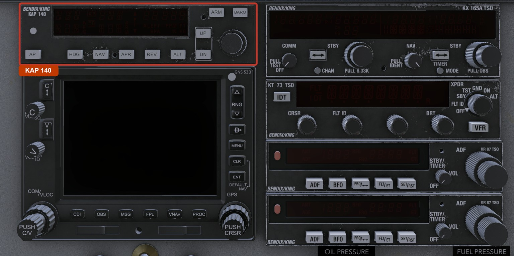
The KAP 140 is engaged by a press and hold of the AP button, not a single tap. This is deliberate, both on the real unit and here, so the autopilot is not engaged by an accidental brush of the button. Details are in Controls in Detail.
| Mode | Annunciation | Function |
|---|---|---|
| Wing leveler | ROL | Holds wings level. The default when you engage. |
| Heading select | HDG | Turns to and holds the HSI heading bug. |
| Navigation | NAV | Tracks the navigation source the HSI shows (the GNS 530, VLOC or GPS). |
| Approach | APR | Flies an ILS: localizer plus glideslope. |
| Back course | REV | Flies a localizer back course. |
| Mode | Annunciation | Function |
|---|---|---|
| Vertical speed | VS | Holds a selected rate of climb or descent. The default when you engage. |
| Altitude hold | ALT | Holds an altitude. |
| Glideslope | GS | Tracks an ILS glideslope (during an approach). |
| Circuit | Bus / breaker | What it powers |
|---|---|---|
| Autopilot | Avionics (DC Radio) bus, AUTOPILOT breaker | The autopilot itself. Needs the avionics master on. |
| AP alert | Battery (essential) bus, AP ALERT breaker | The disconnect warning (flash and tone), independent of the avionics master. |
| Panel light | Radio-panel lighting dimmer | The faceplate and button legends at night. |
The autopilot runs off the avionics bus, so it only functions with the avionics master on. The disconnect warning is wired to the battery bus instead. That way, if you lose the avionics bus while the autopilot is flying, the autopilot drops out and the warning still fires to tell you, because it has its own power.
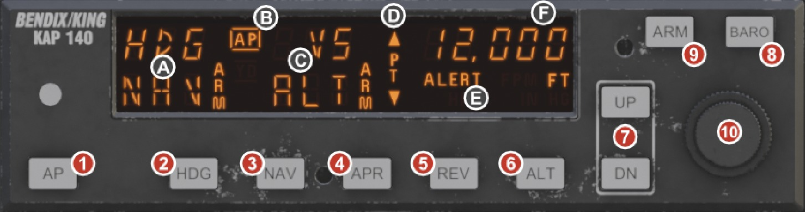
The KAP 140 has a single display window, a row of mode buttons, and one dual concentric knob on the right. There are no separate annunciator lamps: every active mode is spelled out on the display itself.
| # | Control | What it is |
|---|---|---|
| 1 | AP | Engages the autopilot (press and hold) or disengages it (any press). |
| 2 | HDG | Heading select. Toggles between HDG and ROL (wing leveler). |
| 3 | NAV | Arms or selects navigation tracking (VOR/GPS). |
| 4 | APR | Arms or selects approach (ILS localizer and glideslope). |
| 5 | REV | Arms or selects a localizer back course. |
| 6 | ALT | Altitude hold. Captures and holds the current altitude. |
| 7 | UP / DN | Adjust vertical speed, or nudge the held altitude. |
| 8 | BARO | Shows the baro setting; hold to switch units. Inner knob adjusts it. |
| 9 | ARM | Arms or disarms altitude preselect capture. |
| 10 | Knob (dual concentric) | Outer ring = coarse altitude preselect (1000 ft per click). Inner = fine altitude (100 ft per click), or the baro setting when baro is shown. |
Press and hold the AP button for about a quarter second to engage the autopilot. It comes up in its default modes: ROL (wing leveler) for roll and VS (vertical speed) for pitch, holding whatever vertical speed you had at the moment of engagement, rounded to the nearest 100 fpm.
Once engaged, a single press of AP disengages it, no hold required. The autopilot also disengages on its own if it loses power or detects a problem. Any disengagement, by your hand or automatic, triggers the disconnect warning described under Normal and Abnormal Indications.
HDG turns the aircraft to the heading bug on the HSI and holds it. Pressing HDG again drops back to ROL (wings level). The KAP 140 has no heading knob of its own; it follows the heading bug you set on the HSI, so move the bug and the aircraft follows.
In vertical speed mode, each press of UP or DN changes the commanded vertical speed by 100 fpm, up to 2000 fpm either way. Hold the button and the rate changes continuously. The display shows the vertical speed for a few seconds after each change.
In altitude hold, UP and DN nudge the held altitude: a tap moves it 20 ft, and holding the button commands a temporary 500 fpm climb or descent, with the hold altitude re-set to wherever you level out when you release.
Press ALT to capture and hold the current altitude. Press it again to release back to vertical speed mode. ALT is also where the autopilot ends up on its own when it captures a preselected altitude.
ARM turns altitude-preselect capture on and off. You usually do not need to press it: dialing a new altitude with the knob while the autopilot is engaged arms capture automatically. ARM is there for when you want to arm or disarm capture by hand.
Press BARO to show the current barometric setting in the display for a few seconds. While it is shown, the inner knob adjusts it. Hold BARO for about two seconds to switch the units between inches of mercury and hectopascals. In this build the setting is a readout only: the preselect and alerting altitudes are taken from the pilot's altimeter regardless of what the autopilot shows here.
The right-hand knob sets the preselected altitude. The outer ring moves it in 1000 ft steps, the inner knob in 100 ft steps. When baro is displayed (just after a BARO press), the inner knob switches to adjusting the baro setting instead.
These are the navigation and approach modes. They are covered in Navigation and Approach Modes.
Everything the KAP 140 wants to tell you is on its one display. The left side shows the active modes as text, and the right side shows a number, normally the preselected altitude.
| Field | Shows |
|---|---|
| Roll mode | ROL, HDG, NAV, APR, or REV, the active lateral mode. |
| Pitch mode | VS, ALT, or GS, the active vertical mode. |
| ARM | Altitude capture is armed. A mode shown alongside (for example NAV or GS) means that mode is armed and waiting to capture. |
| ALERT | The altitude alerter is active. See Altitude Preselect and Alerting. |
| PT | Pitch trim. The autopilot is calling for nose-up or nose-down trim, shown with an up or down arrow. |
| Numeric field | Normally the preselected altitude in feet. Shows vertical speed (FPM) for a few seconds after UP/DN, or the baro setting (IN HG or hPA) after a BARO press. |
The display returns to showing the preselected altitude a few seconds after you finish adjusting vertical speed or baro. When the autopilot is engaged, the active roll and pitch modes are always shown so you can confirm at a glance what it is doing.
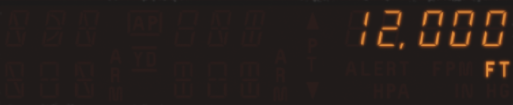
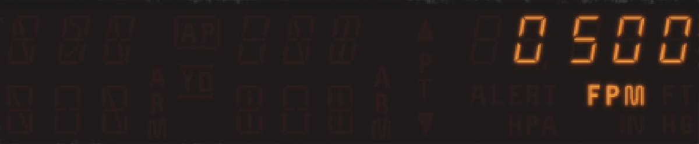
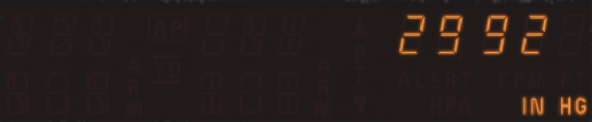
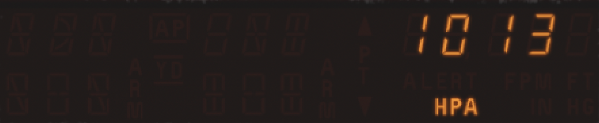
ROL is the default roll mode. It simply holds the wings level. It is what you get the instant you engage, and what the autopilot falls back to when you cancel a heading or navigation mode. Use it when you just want the autopilot to keep the aircraft steady while you do something else.
HDG flies the heading bug. Set the bug on the HSI to the heading you want, press HDG, and the autopilot turns the shortest way to that heading and holds it. To change heading, just move the bug and the aircraft follows it around. Pressing HDG again returns to ROL.
The KAP 140 has no heading knob. Its heading reference is the bug on the KI 525A HSI. See the KCS 55A Compass System guide for setting the bug and for how the HSI presents heading and course.
VS is the default pitch mode. It holds a rate of climb or descent that you set with UP and DN, from level flight up to 2000 fpm in either direction. When you engage the autopilot it captures your current vertical speed, so if you engage in level flight it holds roughly zero, and if you engage in a climb it holds that climb.
ALT holds an altitude. Press ALT and the autopilot captures the altitude you are at and holds it. From there, small corrections keep you on it. If you want to shift the held altitude slightly, tap UP or DN to move it in 20 ft steps, or hold UP or DN for a temporary 500 fpm change and the new altitude is captured when you level off.
Altitude preselect is the headline feature of this autopilot. You dial in the altitude you are cleared to, fly a vertical speed toward it, and the autopilot levels off there for you.
The alerter watches the preselected altitude and warns you about it, whether or not the autopilot is flying. It is useful even when you are hand-flying.
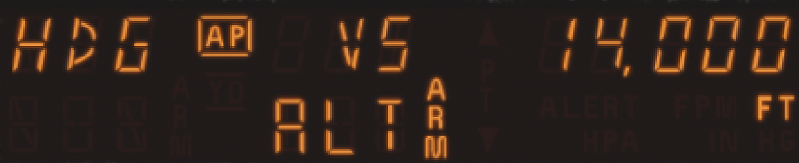
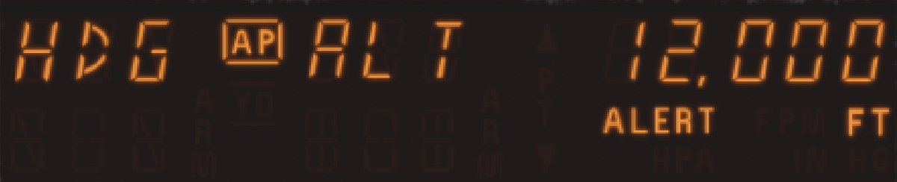
Make a habit of dialing each new cleared altitude into the preselect as soon as you get it. That way the alerter is working for you, and if the autopilot is engaged it will capture and hold the altitude without further input.
The real KAP 140 does its own pressure sensing, so it carries its own barometric setting. In this build that setting is displayed but not used: the preselect and alerting altitudes come from the pilot's altimeter. By default the autopilot's baro follows the aircraft altimeter automatically; once you adjust it by hand it stays where you put it, and nothing else changes.
The lateral side of the KAP 140 does more than hold a heading. NAV tracks a course, APR flies a full ILS, and REV flies a localizer back course. On this aircraft all three follow the HSI, which is driven by the GNS 530. So you tune and identify the navaid on the GNS 530, select the CDI source (its VLOC receiver for a VOR or ILS, or GPS), set the course on the HSI, and the autopilot flies what the needle shows.
These modes follow the HSI, and the HSI is driven by the GNS 530. Whatever the 530's CDI source is set to, its VLOC (VOR/ILS) receiver or GPS, is what the autopilot tracks. Tune and identify the navaid on the 530 and set the CDI source before you couple. The separate VOR/ILS course indicator on the KX 165A is its own display and is not what these modes track.
NAV intercepts and tracks a VOR course. Press NAV and the mode arms. If you were in HDG, the HDG annunciator flashes for a few seconds as a reminder to check the heading bug; arming from wing-level ROL shows no flash, because there is no HDG legend lit to flash. The autopilot holds its current lateral path until the course comes alive, then captures and tracks it. Capture happens as soon as the needle is on the scale at all, so if you arm NAV with the course already alive it will go straight into NAV. Set the course you want with the HSI course pointer first, so the autopilot knows which radial to fly.
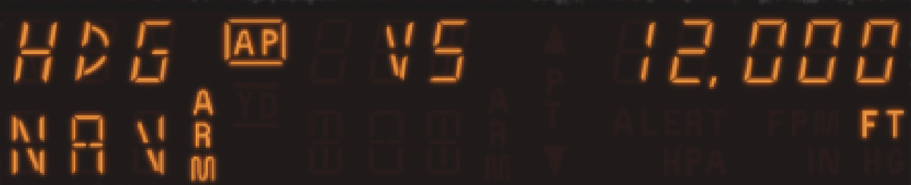
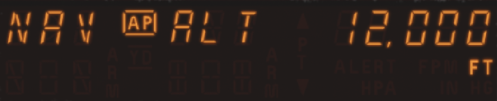
APR is the ILS mode, and it arms both axes at once: the localizer laterally and the glideslope vertically. Press APR while you are positioned to intercept, with the ILS tuned and the inbound course set; the HDG annunciator flashes as it arms, the reminder to check the bug. The autopilot captures the localizer and tracks it with tighter gains than NAV, and as it meets the glideslope from below, the glideslope captures and the autopilot flies the descent down the slope.
REV flies a localizer back course, where the localizer signal is reversed. It tracks the back-course lateral guidance and does not use a glideslope. Tune the localizer on the GNS 530 and select its VLOC source, the same as for the other coupled modes, then set the front-course heading as the reference; the autopilot handles the reverse sensing. The KX 165A drives the separate VOR/ILS head and is not what REV tracks.
You do not select the glideslope directly; APR arms it for you. When the aircraft intercepts the glideslope from below, GS becomes the active vertical mode, the display shows GS, and the autopilot flies the descent. Capturing from below is deliberate: it keeps the autopilot off the false upper lobes of the glideslope signal.
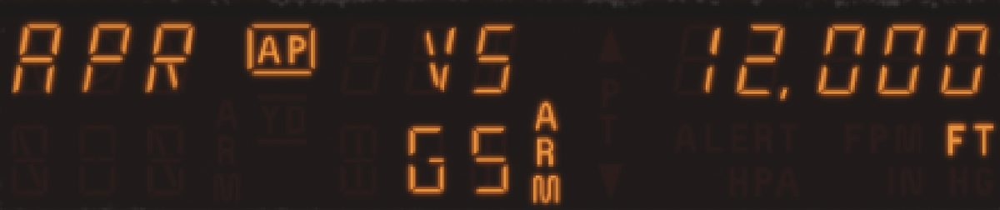
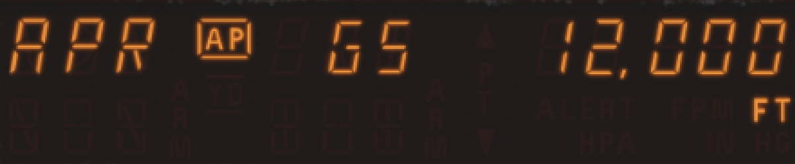
The KAP 140 can be opened in its own floating window, handy for setting it up on a second monitor or working it in VR. In X-Plane's keyboard or joystick settings, find the command named "Toggle KAP 140 popup" and bind it to a key or controller button. Press it to open the window; press it again to close it.
Inside the window every control works exactly as it does in the cockpit: click the buttons, and roll the mouse wheel over the knob to turn it. Click the unit's nameplate to dock or undock the window. Docked, it fills the window edge to edge; undocked, it floats as an ordinary window you can drag and resize anywhere on screen, with the bezel letterboxed so the faceplate keeps its proportions.
The KAP 140 also appears in the unified Avionics Stack popup, a single window that shows the whole Modern radio stack at once with every screen live and every control working. The stack and this unit's own popup coexist, and both stay in sync with the panel, so you can run whichever suits your setup. The Avionics Stack is covered in the main DC-3 Aircraft Operating Manual.
When the unit powers up it runs a brief self-test before it will fly. First it shows a preflight test, PFT with a step counter that climbs through its checks. Then it lights every segment of the display for a moment as a lamp test, so you can confirm no segments have failed. The live display appears after that and the autopilot is ready.
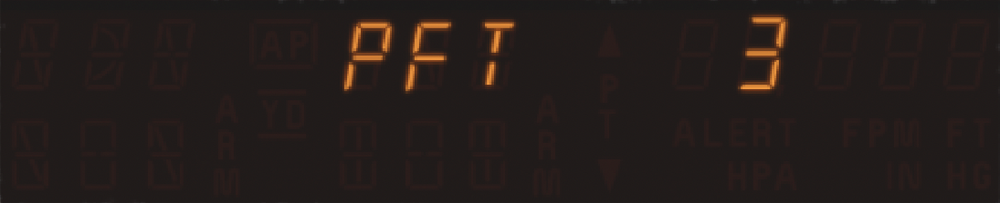
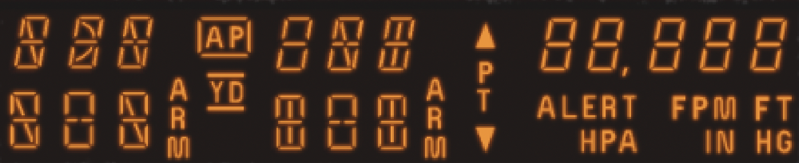
A powered KAP 140 shows its display steadily, with the preselected altitude on the right. When engaged, the active roll and pitch modes are shown on the left. The autopilot flies smoothly and holds modes without wandering.
Every time the autopilot disconnects, by your press or on its own, the AP annunciator flashes for about five seconds and a short aural tone sounds. Because the warning is wired to the battery bus, it still fires even if the autopilot dropped out because it lost the avionics bus. Treat any unexpected disconnect warning as a prompt to take the controls and re-trim.
| Indication | Meaning | What to do |
|---|---|---|
| Display dark | No power: avionics master off, or the AUTOPILOT breaker is open. | Restore avionics power and check the breaker. The autopilot cannot engage unpowered. |
| AP annunciator flashing + tone | The autopilot has disconnected. | Take the controls, re-trim, and re-engage if appropriate. |
| PT with an arrow | The autopilot is calling for pitch trim in the indicated direction. | Trim in the direction shown to relieve the pitch servo. |
| ALERT flashing | You have deviated more than 200 ft from the selected altitude. | Return to the selected altitude, or set a new one. |
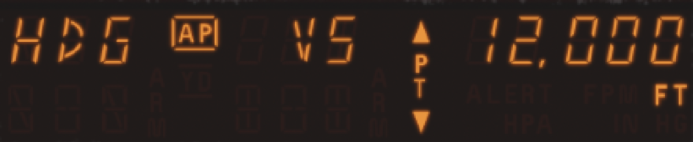
LES DC-3 · KAP 140 Autopilot Operating Guide · DC-3 Modern Avionics Series
Leading Edge Simulations · Published by X-Aviation